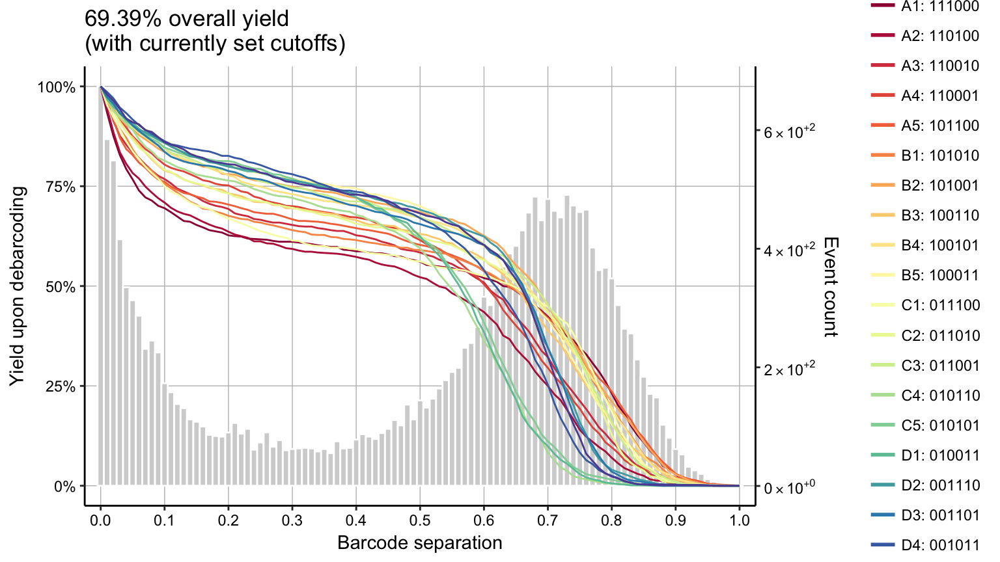
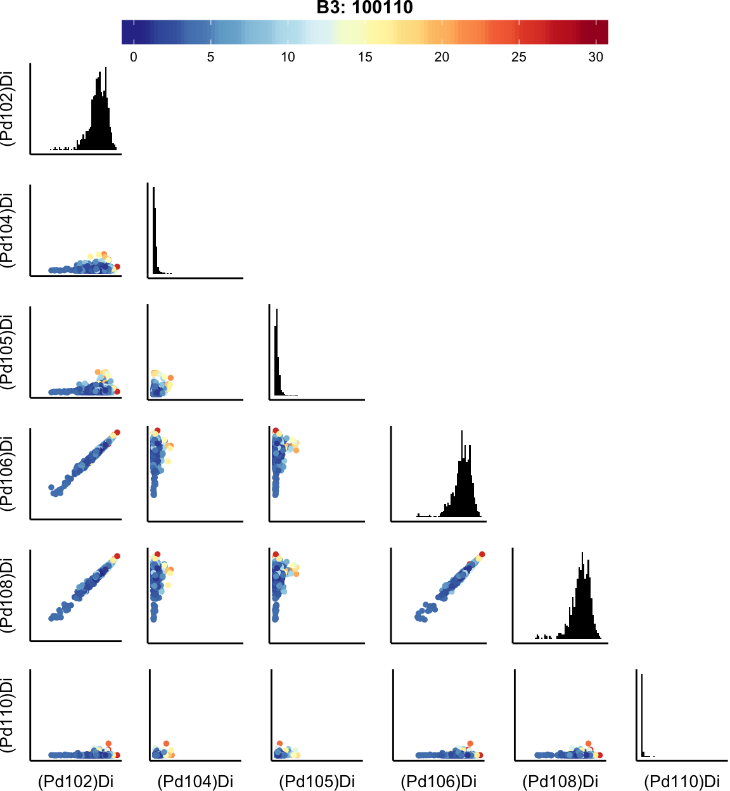
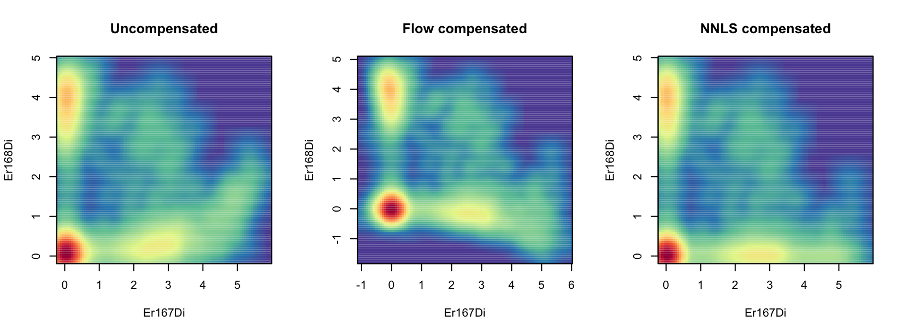

Preprocessing with CATALYST
Helena L Crowell
crowellh@student.ethz.chVito RT Zanotelli
Stéphane Chevrier
Bernd Bodenmiller
Mark D Robinson
16 May 2018
Source:vignettes/preprocessing.Rmd
preprocessing.RmdAbstract
By addressing the limit of measurable fluorescent parameters due to instrumentation and spectral overlap, mass cytometry (CyTOF) combines heavy metal spectrometry to allow examination of up to (theoretically) 100 parameters at the single cell level. While spectral overlap is significantly less pronounced in CyTOF than flow cytometry, spillover due to detection sensitivity, isotopic impurities, and oxide formation can impede data interpretability. We designed CATALYST (Cytometry dATa anALYSis Tools) to provide tools for (pre)processing and analysis of cytometry data, including compensation and in particular, an improved implementation of the single-cell deconvolution algorithm.Data examples
-
Normalization:
raw_datais aflowSetwith 2 experiments, each containing 2’500 raw measurements with a variation of signal over time. Samples were mixed with DVS beads captured by mass channels 140, 151, 153, 165 and 175. -
Debarocoding:
To demonstrate the debarcoding work-flow with CATALYST, we providesample_ffwhich follows a 6-choose-3 barcoding scheme where mass channels 102, 104, 105, 106, 108, and 110 were used for labeling such that each of the 20 individual barcodes are positive for exactly 3 out of the 6 barcode channels. Accompanying this,sample_keycontains a binary code of length 6 for each sample, e.g. 111000, as its unique identifier. -
Compensation:
Alongside the multiplexed-stained cell samplemp_cells, the package contains 36 single-antibody stained controls inss_expwhere beads were stained with antibodies captured by mass channels 139, 141 through 156, and 158 through 176, respectively, and pooled together. Note that, to decrease running time, we downsampled to a total of 10’000 events. Lastly,isotope_listcontains a named list of isotopic compositions for all elements within 75 through 209 u corresponding to the CyTOF mass range at the time of writing (1).
Normalization
CATALYST provides an implementation of bead-based normalization as described by Finck et al. (2). Here, identification of bead-singlets (used for normalization), as well as of bead-bead and cell-bead doublets (to be removed) is automated as follows:
- beads are identified as events with their top signals in the bead channels
- cell-bead doublets are remove by applying a separation cutoff to the distance between the lowest bead and highest non-bead signal
- events passing all vertical gates defined by the lower bounds of bead signals are removed (these include bead-bead and bead-cell doublets)
- bead-bead doublets are removed by applying a default \(median\;\pm5\;mad\) rule to events identified in step 2. The remaining bead events are used for normalization.
Normalization work-flow
concatFCS: Concatination of FCS files
Multiple flowFrames or FCS files can be concatenated via concatFCS, which takes either a flowSet, a list of flowFrames, a character specifying the location of the FCS files to be concatinated, or a vector of FCS file names as input. If out_path=NULL (the default), the function will return a single flowFrame containing the measurement data of all files. Otherwise, an FCS 3.0 standard file of the concatenated data will be written to the specified location.
normCytof: Normalization using bead standards
Since bead gating is automated here, normalization comes down to a single function that takes a flowFrame as input and only requires specification of the beads to be used for normalization. Valid options are:
-
"dvs"for bead masses 140, 151, 153, 165, 175 -
"beta"for bead masses 139, 141, 159, 169, 175 - or a custom numeric vector of bead masses
By default, we apply a \(median\;\pm5\;mad\) rule to remove low- and high-signal events from the bead population used for estimating normalization factors. The extent to which bead populations are trimmed can be adjusted via trim. The population will become increasingly narrow and bead-bead doublets will be exluded as the trim value decreases. Notably, slight over-trimming will not affect normalization. It is therefore recommended to choose a trim value that is small enough to assure removal of doublets at the cost of a small bead population to normalize to.
Debarcoding
CATALYST provides an implementation of the single-cell deconvolution algorithm described by Zunder et al. (3). The package contains three functions for debarcoding and three visualizations that guide selection of thresholds and give a sense of barcode assignment quality.
In summary, events are assigned to a sample when i) their positive and negative barcode populations are separated by a distance larger than a threshold value and ii) the combination of their positive barcode channels appears in the barcoding scheme. Depending on the supplied scheme, there are two possible ways of arriving at preliminary event assignments:
-
Doublet-filtering:
Given a binary barcoding scheme with a coherent number \(k\) of positive channels for all IDs, the \(k\) highest channels are considered positive and \(n-k\) channels negative. Separation of positive and negative events equates to the difference between the \(k\)th highest and \((n-k)\)th lowest intensity value. If a numeric vector of masses is supplied, the barcoding scheme will be an identity matrix; the most intense channel is considered positive and its respective mass assigned as ID.
-
Non-constant number of 1’s:
Given a non-uniform number of 1’s in the binary codes, the highest separation between consecutive barcodes is looked at. In both, the doublet-filtering and the latter case, each event is assigned a binary code that, if matched with a code in the barcoding scheme supplied, dictates which row name will be assigned as ID. Cells whose positive barcodes are still very low or whose binary pattern of positive and negative barcodes doesn’t occur in the barcoding scheme will be given ID 0 for “unassigned”.
All data required for debarcoding are held in objects of class dbFrame (see Appendix), allowing for the following easy-to-use work-flow:
- as the initial step of single-cell deconcolution,
assignPrelimwill return adbFramecontaining the input measurement data, barcoding scheme, and preliminary event assignments. - assignments will be made final by
applyCutoffs. It is recommended to estimate, and possibly adjust, population-specific separation cutoffs by runningestCutoffsprior to this. -
plotYields,plotEventsandplotMahalaim to guide selection of devoncolution parameters and to give a sense of the resulting barcode assignment quality. - lastly, population-wise FCS files are written from the
dbFramewithoutFCS.
Debarcoding work-flow
assignPrelim: Assignment of preliminary IDs
The debarcoding process commences by assigning each event a preliminary barcode ID. assignPrelim thereby takes either a binary barcoding scheme or a vector of numeric masses as input, and accordingly assigns each event the appropirate row name or mass as ID. FCS files are read into R with read.FCS of the flowCore package, and are represented as an object of class flowFrame:
## flowFrame object 'anonymous'
## with 20000 cells and 6 observables:
## name desc range minRange maxRange
## 1 (Pd102)Di BC102 9745.799 -0.9999121 9745.799
## 2 (Pd104)Di BC104 9687.522 -0.9994696 9687.522
## 3 (Pd105)Di BC105 8924.638 -0.9989271 8924.638
## 4 (Pd106)Di BC106 8016.669 -0.9997822 8016.669
## 5 (Pd108)Di BC108 9043.869 -0.9999974 9043.869
## 6 (Pd110)Di BC110 8204.455 -0.9999368 8204.455
## 0 keywords are stored in the 'description' slotThe debarcoding scheme should be a binary table with sample IDs as row and numeric barcode masses as column names:
## 102 104 105 106 108 110
## A1 1 1 1 0 0 0
## A2 1 1 0 1 0 0
## A3 1 1 0 0 1 0
## A4 1 1 0 0 0 1
## A5 1 0 1 1 0 0
## B1 1 0 1 0 1 0Provided with a flowFrame and a compatible barcoding scheme (barcode masses must occur in the parameters of the flowFrame), assignPrelim will return a dbFrame containing exprs from the input flowFrame, a numeric or character vector of event assignments in slot bc_ids, separations between barcode populations on the normalized scale in slot deltas, normalized barcode intensities in slot normed_bcs, and the counts and yields matrices. Measurement intensities are normalized by population such that each is scaled to the 95% quantile of asinh transformed measurement intensities of events assigned to the respective barcode population.
## dbFrame object with
## 20000 events, 6 observables and 20 barcodes:
##
## Current assignments:
## 0 event(s) unassigned
## ID A1 A2 A3 A4 A5 B1 B2 B3 B4 B5 C1 C2 C3
## Count 1000 1000 1000 1000 1000 1000 1000 1000 1000 1000 1000 1000 1000
##
## ID C4 C5 D1 D2 D3 D4 D5
## Count 1000 1000 1000 1000 1000 1000 1000
estCutoffs: Estimation of separation cutoffs
As opposed to a single global cutoff, estCutoffs will estimate a sample-specific cutoff to deal with barcode population cell yields that decline in an asynchronous fashion. Thus, the choice of thresholds for the distance between negative and positive barcode populations can be i) automated and ii) independent for each barcode. Nevertheless, reviewing the yield plots (see below), checking and possibly refining separation cutoffs is advisable.
For the estimation of cutoff parameters we consider yields upon debarcoding as a function of the applied cutoffs. Commonly, this function will be characterized by an initial weak decline, where doublets are excluded, and subsequent rapid decline in yields to zero. Inbetween, low numbers of counts with intermediate barcode separation give rise to a plateau. To facilitate robust estimation, we fit a linear and a three-parameter log-logistic function (4) to the yields function with the LL.3 function of the drc R package (5) (Figure @ref(fig:estCutoffs)). As an adequate cutoff estimate, we target a point that marks the end of the plateau regime and on-set of yield decline to appropriately balance confidence in barcode assignment and cell yield.
The goodness of the linear fit relative to the log-logistic fit is weighed as follow: \[w = \frac{\text{RSS}_{log-logistic}}{\text{RSS}_{log-logistic}+\text{RSS}_{linear}}\]
The cutoffs for both functions are defined as:
\[c_{linear} = -\frac{\beta_0}{2\beta_1}\] \[c_{log-logistic}=\underset{x}{\arg\min}\:\frac{\vert\:f'(x)\:\vert}{f(x)} > 0.1\]
The final cutoff estimate \(c\) is defined as the weighted mean between these estimates:
\[c=(1-w)\cdot c_{log-logistic}+w\cdot c_{linear}\]
![(#fig:estCutoffs) Description of the automatic cutoff estimation for each individual population. The bar graphs indicate the distribution of cells relative to the barcode distance and the dotted line corresponds to the yield upon debarcoding as a function of the applied separation cutoff. This curve is fitted with a linear regression (blue line) and a three parameter log-logistic function (red line). The cutoff estimate is defined as the mean of estimates derived from both fits, weighted with the goodness of the respective fit.](estCutoffs.png)
(#fig:estCutoffs) Description of the automatic cutoff estimation for each individual population. The bar graphs indicate the distribution of cells relative to the barcode distance and the dotted line corresponds to the yield upon debarcoding as a function of the applied separation cutoff. This curve is fitted with a linear regression (blue line) and a three parameter log-logistic function (red line). The cutoff estimate is defined as the mean of estimates derived from both fits, weighted with the goodness of the respective fit.
applyCutoffs: Applying deconvolution parameters
Once preliminary assignments have been made, applyCutoffs will apply the deconvolution parameters: Outliers are filtered by a Mahalanobis distance threshold, which takes into account each population’s covariance, and doublets are removed by excluding events from a population if the separation between their positive and negative signals fall below a separation cutoff. These thresholds are held in the sep_cutoffs and mhl_cutoff slots of the dbFrame. By default, applyCutoffs will try to access the sep_cutoffs in the provided dbFrame, requiring having run estCutoffs prior to this. Alternatively, a numeric vector of cutoff values or a single, global value may be specified. In either case, it is highly recommended to thoroughly review the yields plot (see above), as the choice of separation cutoffs will determine debarcoding quality and cell yield.
# use global separation cutoff
applyCutoffs(x=re, sep_cutoffs=0.35)
# use population-specific cutoffs
re <- applyCutoffs(x=re)
outFCS: Output population-wise FCS files
Once event assignments have been finalized, a separate FCS file can be written for each population by running outFCS. If option out_nms=NULL (the default), the respective population`s ID in the barcoding scheme will be used as file name. Alternatively, an ordered character vector or a 2 column CSV with sample IDs and the desired file names may be specified as a naming scheme.
plotYields: Selecting barcode separation cutoffs
For each barcode, plotYields will show the distribution of barcode separations and yields upon debarcoding as a function of separation cutoffs. If available, the currently used separation cutoff as well as its resulting yield within the population is indicated in the plot’s main title.
Option which=0 will render a summary plot of all barcodes. Here, the overall yield achieved by applying the current set of cutoff values will be shown. All yield functions should behave as described above: decline, stagnation, decline. Convergence to 0 yield at low cutoffs is a strong indicator that staining in this channel did not work, and excluding the channel entirely is sensible in this case. It is thus recommended to always view the all-barcodes yield plot to eliminate uninformative populations, since small populations may cause difficulties when computing spill estimates.

plotEvents: Normalized intensities
Normalized intensities for a barcode can be viewed with plotEvents. Here, each event corresponds to the intensities plotted on a vertical line at a given point along the x-axis. Option which=0 will display unassigned events, and the number of events shown for a given sample may be varied via n_events. If which="all", the function will render an event plot for all IDs (including 0) with events assigned.
# event plots for unassigned events
# & barcode population D1
plotEvents(x=re, which=c(0, "D1"), n_events=25)
plotMahal: All barcode biaxial plot
Function plotMahal will plot all inter-barcode interactions for the population specified with argument which. Events are colored by their Mahalanobis distance. NOTE: For more than 7 barcodes (up to 128 samples) the function will render an error, as this visualization is infeasible and hardly informative. Using the default Mahalanobis cutoff value of 30 is recommended in such cases.

Compensation
CATALYST performs compensation via a two-step approach comprising:
- identification of single positive populations via single-cell debarcoding (SCD) of single-stained beads (or cells)
- estimation of a spillover matrix (SM) from the populations identified, followed by compensation via multiplication of measurement intensities by its inverse, the compensation matrix (CM).
Retrieval of real signal. As in conventional flow cytometry, we can model spillover linearly, with the channel stained for as predictor, and spill-effected channels as response. Thus, the intensity observed in a given channel \(j\) are a linear combination of its real signal and contributions of other channels that spill into it. Let \(s_{ij}\) denote the proportion of channel \(j\) signal that is due to channel \(i\), and \(w_j\) the set of channels that spill into channel \(j\). Then
\[I_{j, observed}\; = I_{j, real} + \sum_{i\in w_j}{s_{ij}}\]
In matrix notation, measurement intensities may be viewed as the convolution of real intensities and a spillover matrix with dimensions number of events times number of measurement parameters:
\[I_{observed}\; = I_{real} \cdot SM\]
Therefore, we can estimate the real signal, \(I_{real}\;\), as:
\[I_{real} = I_{observed}\; \cdot {SM}^{-1} = I_{observed}\; \cdot CM\] where \(\text{SM}^{-1}\) is termed compensation matrix (\(\text{CM}\)). This approach is implemented in compCytof(..., method = "flow") and makes use of flowCore’s compensate function.
While mathematically exact, the solution to this equation will yield negative values, and does not account for the fact that real signal would be strictly non-negative counts. A computationally efficient way to adress this is the use of non-negative linear least squares (NNLS):
\[\min \: \{ \: ( I_{observed} - SM \cdot I_{real} ) ^ T \cdot ( I_{observed} - SM \cdot I_{real} ) \: \} \quad \text{s.t.} \: I_{real} ≥ 0\]
This approach will solve for \(I_{real}\) such that the least squares criterion is optimized under the constraint of non-negativity. To arrive at such a solution we apply the Lawson-Hanson algorithm (6, 7) for NNLS implemented in the nnls R package (method="nnls").
Estimation of SM. Because any signal not in a single stain experiment’s primary channel \(j\) results from channel crosstalk, each spill entry \(s_{ij}\) can be approximated by the slope of a linear regression with channel \(j\) signal as the response, and channel \(i\) signals as the predictors, where \(i\in w_j\). computeSpillmat() offers two alternative ways for spillover estimation, summarized in Figure @ref(fig:methods).
The default method approximates this slope with the following single-cell derived estimate: Let \(i^+\) denote the set of cells that are possitive in channel \(i\), and \(s_{ij}^c\) be the channel \(i\) to \(j\) spill computed for a cell \(c\) that has been assigned to this population. We approximate \(s_{ij}^c\) as the ratio between the signal in unstained spillover receiving and stained spillover emitting channel, \(I_j\) and \(I_i\), respectively. The expected background in these channels, \(m_j^-\) and \(m_i^-\), is computed as the median signal of events that are i) negative in the channels for which spill is estimated (\(i\) and \(j\)); ii) not assigned to potentionally interacting channels; and, iii) not unassigned, and subtracted from all measurements:
\[s_{ij}^c = \frac{I_j - m_j^{i-}}{I_i - m_i^{i-}}\]
Each entry \(s_{ij}\) in \(\text{SM}\) is then computed as the median spillover across all cells \(c\in i^+\):
\[s_{ij} = \text{med}(s_{ij}^c\:|\:c\in i^+)\]
In a population-based fashion, as done in conventional flow cytometry, method = "classic" calculates \(s_{ij}\) as the slope of a line through the medians (or trimmed means) of stained and unstained populations, \(m_j^+\) and \(m_i^+\), respectively. Background signal is computed as above and substracted, according to:
\[s_{ij} = \frac{m_j^+-m_j^-}{m_i^+-m_i^-}\]

(#fig:methods) Population versus single-cell based spillover estimation.
On the basis of their additive nature, spill values are estimated independently for every pair of interacting channels. interactions = "default" thereby exclusively takes into account interactions that are sensible from a chemical and physical point of view:
- \(M\pm1\) channels (abundance sensitivity)
- the \(M+16\) channel (oxide formation)
- channels measuring isotopes (isotopic impurities)
See Table @ref(tab:isotopes) for the list of mass channels considered to potentionally contain isotopic contaminatons, along with a heat map representation of all interactions considered by the default method in Figure @ref(fig:interactions).
| Metal | Isotope masses |
|---|---|
| La | 138, 139 |
| Pr | 141 |
| Nd | 142, 143, 144, 145, 146, 148, 150 |
| Sm | 144, 147, 148, 149, 150, 152, 154 |
| Eu | 151, 153 |
| Gd | 152, 154, 155, 156, 157, 158, 160 |
| Dy | 156, 158, 160, 161, 162, 163, 164 |
| Er | 162, 164, 166, 167, 168, 170 |
| Tb | 159 |
| Ho | 165 |
| Yb | 168, 170, 171, 172, 173, 174, 176 |
| Tm | 169 |
| Lu | 175, 176 |
:(#tab:isotopes) List of isotopes available for each metal used in CyTOF. In addition to \(M\pm1\) and \(M+16\) channels, these mass channels are considered during estimation of spill to capture channel crosstalk that is due to isotopic contanimations (1).
(#fig:interactions) Heat map of spill expected interactions. These are considered by the default method of computeSpillmat.
Alternatively, interactions = "all" will compute a spill estimate for all \(n\cdot(n-1)\) possible interactions, where \(n\) denotes the number of measurement parameters. Estimates falling below the threshold specified by th will be set to zero. Lastly, note that diagonal entries \(s_{ii} = 1\) for all \(i\in 1, ..., n\), so that spill is relative to the total signal measured in a given channel.
Compensation work-flow
computeSpillmat: Estimation of the spillover matrix
Given a flowFrame of single-stained beads (or cells) and a numeric vector specifying the masses stained for, computeSpillmat estimates the spillover matrix as described above. Spill values are affected my the method chosen for their estimation, that is "median" or "mean", and, in the latter case, the specified trim percentage. The process of adjusting these options and reviewing the compensated data may iterative until compensation is satisfactory
# get single-stained control samples
data(ss_exp)
# specify mass channels stained for
bc_ms <- c(139, 141:156, 158:176)
# debarcode
re <- assignPrelim(x=ss_exp, y=bc_ms, verbose=FALSE)
re <- estCutoffs(x=re)
re <- applyCutoffs(x=re)
# compute spillover matrix
spillMat <- computeSpillmat(x=re)
plotSpillmat: Spillover matrix heat map
plotSpillmat provides a visualization of estimated spill percentages as a heat map. Channels without a single-antibody stained control are annotated in grey, and colours are ramped to the highest spillover value present. Option annotate=TRUE (the default) will display spill values inside each bin, and the total amount of spill caused and received by each channel on the top and to the right, respectively.
compCytof: Compensation of mass cytometry data
Assuming a linear spillover, compCytof compensates mass spectrometry based experiments using a provided spillover matrix. If the spillover matrix (SM) does not contain the same set of columns as the input experiment, it will be adapted according to the following rules:
- columns present in the SM but not in the input data will be removed from it
- non-metal columns present in the input but not in the SM will be added such that they do neither receive nor cause spill
- metal columns that have the same mass as a channel present in the SM will receive (but not emit) spillover according to that channel
- if an added channel could potentially receive spillover (as it has +/-1M or +16M of, or is of the same metal type as another channel measured), a warning will be issued as there could be spillover interactions that have been missed and may lead to faulty compensation
If out_path=NULL (the default), the function will return a flowFrame of the compensated data. Else, compensated data will be written to the specified location as FCS 3.0 standard files. Multiple data sets may be corrected based on the same spill estimates if the input x is a character string specifying the location of the FCS files to be compensated.
data(mp_cells)
comped_flow <- compCytof(x=mp_cells, y=spillMat, method="flow")
comped_nnls <- compCytof(x=mp_cells, y=spillMat, method="nnls")
Appendix
The dbFrame class
Data returned by and used throughout debarcoding are stored in a debarcoding frame. An object of class dbFrame includes the following elements:
- Event information, stored in a matrix, is passed from the input
flowFramespecified inassignPrelimto theexprsslot. - The
bc_keyslot is a binary matrix with numeric masses as column names and sample names as row names. If supplied with a numeric vector of masses,assignPrelimwill internally generate a concurrent representation. -
bc_idsis a numeric or character vector of the ID assignments that have been made. If a given event’s separation falls below its separation cutoff, or above the population’s Mahalanobis distance cutoff, it will be give ID 0 for “unassigned”. Assignments can be manipulated withbc_ids<-. - The
deltasslot contains for each event the separations between positive and nergative populations, that is, between the lowest positive and highest negative intesity. -
normed_bcsare the barcode intensities normalized by population. Here, each event is scaled to the 95% quantile of the population it’s been assigned to.sep_cutoffsare applied to these normalized intensities. - Slots
sep_cutoffsandmhl_cutoffcontain the devoncolution parameters. These can be specified by standard replacement viasep_cutoffs<-andmhl_cutoff<-. -
countsandyieldsare matrices of dimension (# samples)x(101). Each row in thecountsmatrix contains the number of events within a sample for which positive and negative populations are separated by a distance between in [0,0.01), …, [0.99,1], respectively. The percentage of events within a sample that will be obtained after applying a separation cutoff of 0, 0.01, …, 1, respectively, is given inyields.
For a brief overview, show(dbFrame) will display
- the dimensionality of the measurement data and number of barcodes
- current assignments in order of decreasing population size
- current separation cutoffs (if available)
- the average and per-population yield achieved upon debarcoding
(ifsep_cutoffsare specified)
References
1. J. S. Coursey, D. J. Schwab, J. J. Tsai, R. A. Dragoset, Atomic weights and isotopic compositions (2015), (available at http://physics.nist.gov/Comp).
2. R. Finck et al., Normalization of mass cytometry data with bead standards. Cytometry Part A. 83A, 483–494 (2013).
3. E. R. Zunder et al., Palladium-based mass tag cell barcoding with a doublet-filtering scheme and single-cell deconvolution algorithm. Nat. Protocols. 10, 316–333 (2015).
4. D. J. Finney, Probit analysis, 3rd ed. Journal of Pharmaceutical Sciences. 60, 1432–1432 (1971).
5. C. Ritz, F. Baty, J. C. Streibig, D. Gerhard, Dose-response analysis using r. PLOS ONE. 10 (2015).
6. C. Lawson, R. Hanson, Solving least squares problems (Prentice Hall, Englewood Cliffs, NJ, 1974).
7. C. Lawson, R. Hanson, Solving least squares problems (Classics in Applied Mathematics, SIAM, Philadelphia, 1995).